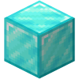

アリーナの紹介
一部アリーナは舞倉市 (@city_of_maikura) より拝借したものになっています。
詳しい情報はPlanet Minecraftよりご覧ください。
現在ローテーションに含まれているアリーナ


特殊ブロック
エメラルドブロック
プレイヤーがこのブロックに乗ると、高く空へと飛ばし上げます。
このブロックによる飛躍力はLeaperには及びませんが、一時的な射撃の回避や高所の位置取りにはもってこい。
うまく応用をすれば敢えてこのブロックへ落下中にParallelを使用したり、Hazeをこのブロックの上に罠として設置して置いたり。
偏差撃ちをしっかり覚えてしまえば無双できるかもしれません。
このブロックに対して壁ジャンプが可能。
ダイヤモンドブロック

プレイヤーがこのブロックに乗ると向いている方向へと、なめらかに加速させます。
上方向の加速度は常に一定ですが、180度後ろに移動したり90度方向へ移動したりできます。
方向の制約がないので、このブロックの使用者を矢で射貫くのは困難でしょう。
このブロックを上手く扱うのには少しばかり練習が必要かもしれません。
金ブロック

このブロックはシールドのプレイヤーのみが使えます。
ウェポンを使用してから10秒間このブロックの上に留まることで、鎧を獲得できます。
空色の色付き板ガラス

プレイヤーは矢によって唯一このガラスを破壊できるようになります。
この空色の板ガラスは橋の側壁や大きい窓などに配置されています。
割ることで新たな通路を確保できますが、割った時にガラスの破壊音が響くので、位置がバレる可能性があります。
青色の色付き板ガラス
トラッパーが生み出す罠に使われているのがこの青色の板ガラスです。
この生成されるガラスは壊すことができません。